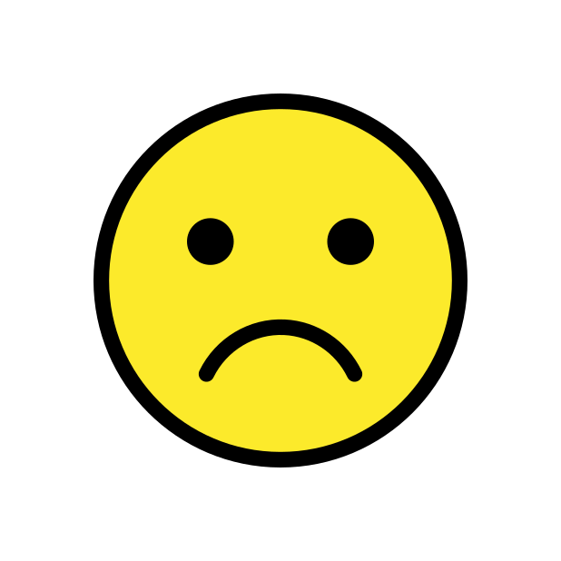
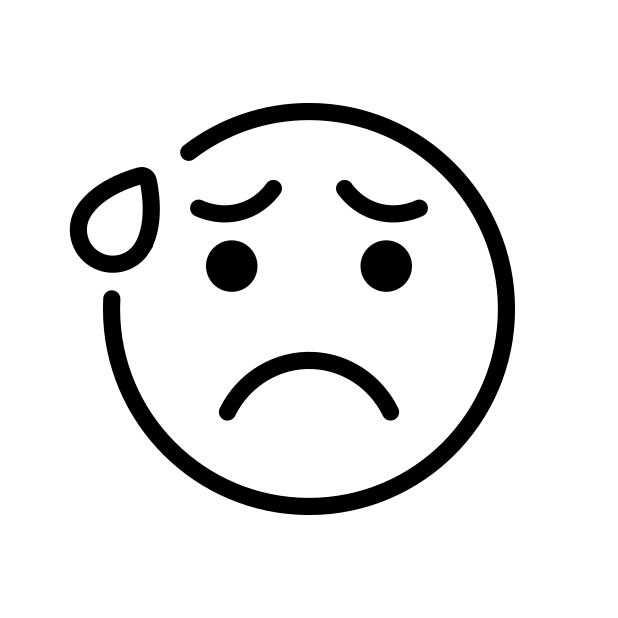

Important: If you or someone you know is in immediate danger, contact local emergency services.
For non‑emergencies, consider reaching out to a licensed professional.

Depression
Depressive disorder (also known as depression) is a common mental disorder.
It involves a depressed mood or loss of pleasure or interest in activities for long periods of time.
Symptoms may include:
- poor concentration
- very low self-esteem and downgradetion of self-worth
- loss of interest in activities
- persistent sadness or low mood
- feelings of hopelessness
- Suicidal thoughts
- changes in sleep patterns
- changes in appetite or weight
- low energy or fatigue
Causes of depression
- Genetics: Family history of depression can increase risk.
- Brain chemistry: Imbalances in neurotransmitters like serotonin and norepinephrine.
- Environmental factors: Stressful life events, trauma, or abuse.
- Medical conditions: Chronic illness, hormonal changes, or substance abuse.
Solutions and treatments
- Psychotherapy: Cognitive Behavioral Therapy (CBT) is effective.
- Medication: Antidepressants can help balance brain chemicals.
- Lifestyle changes: Regular exercise, healthy diet, and good sleep hygiene.
- Support networks: Talking to friends, family, or support groups.
Learn More About Depression

Anxiety Disorders
Anxiety disorders are characterized by excessive fear or worry that interferes with daily activities.
Common types include Generalized Anxiety Disorder (GAD), Panic Disorder and Social Anxiety Disorder
Panic Disorder involves recurrent panic attacks, which are sudden periods of intense fear or discomfort.
Social Anxiety Disorder involves intense fear of social situations and being judged by others.
Generalized Anxiety Disorder (GAD) involves persistent and excessive worry about various aspects of life, such as work, health, or relationships.
Symptoms may include:
- Excessive worry or anxiety
- Restlessness or feeling on edge
- Muscle tension
- Having difficulty concentrating
- Hyperventilation
- Physical symptoms like rapid heartbeat or sweating
Causes of anxiety disorders
- Genetics: Family history of anxiety disorders can increase risk.
- Brain chemistry: Imbalances in neurotransmitters like serotonin and dopamine.
- Environmental factors: Stressful life events, trauma, or abuse.
- Personality traits: Certain personality types may be more prone to anxiety.
Solutions and treatments
- medication like Antidepressants or anti-anxiety medications can help.
- Regular exercise, healthy diet, and good sleep hygiene are helpful to treat anxiety.
- Relaxation techniques like mindfulness, meditation, or yoga can help reduce anxiety.
- It is recommended to get early treatment to defeat anxiety disorders as early as possible
Learn More About Anxiety Disorders
Bipolar Disorder(Manic Depression)
It is defined as a mental health illness that gives the main symptom of severe mood swings.
These mood swings can range from depressive lows to manic highs, which can affect sleep, energy, activity, judgment, behavior, and the ability to think clearly.
Symptoms may include:
- Extreme mood swings
- Changes in sleep patterns
- Changes in energy levels
- Difficulty concentrating
- Impulsive or risky behavior during manic episodes
- Feelings of hopelessness or worthlessness during depressive episodes
Causes of bipolar disorder
- Genetics: Family history of bipolar disorder can increase risk.
- Brain structure and function: Abnormalities in brain regions involved in mood regulation.
- Environmental factors: Stressful life events, trauma, or substance abuse.
Solutions and treatments
- Awareness: They need to be aware that they have bipolar disorder as it will be more difficult to get them
the help they need if they are not aware of their condition, especially when early treatments gives better results.
- Medication: Mood stabilizers, antipsychotics, and antidepressants can help manage symptoms.
- Psychotherapy: Cognitive Behavioral Therapy (CBT) and family therapy can be effective.
- Lifestyle changes: Regular exercise, healthy diet, and good sleep hygiene are important.
- Support networks: Talking to friends, family, or support groups can provide additional help.
Learn More About Bipolar Disorder
Post‑Traumatic Stress Disorder (PTSD)
PTSD is a mental health illness that's caused by an extremely stressful events, usually seen in war and it occurs whether you see it or experience it
Symptoms may include:
- Intrusive memories or flashbacks of the traumatic event
- Avoidance of reminders of the trauma
- Negative changes in mood or cognition
- Hyperarousal, such as being easily startled or feeling tense
- memories of the traumatic events being relieved
Causes of PTSD
- Experiencing or witnessing a traumatic event, such as combat, natural disasters, or personal assaults.
- Family history of PTSD or other mental health disorders can increase risk.
Solutions and treatments
- medication like antidepressants and anti-anxiety medications can help manage symptoms.
- Talking to friends, family, or support groups can provide additional help.
Learn More About PTSD
Obsessive Compulsive Disorder (OCD)
OCD are patterns of intrusive thoughts and fears that later become obsessions.
They also later become repitive behaviours termed as compulsions, hence the name Obsessive Compulsive Disorder.
Symptoms may include:
- Intrusive thoughts or obsessions such as harming your family that cause anxiety
- Difficulty or doubts of dealing with uncertainty
- Unwanted thoughts that can harm people or commit crimes if acted upon
- Difficulty controlling obsessive thoughts or compulsive behaviors
Causes of OCD
- Abnormalities in brain regions involved in impulse control and anxiety regulation.
- Compulsive behaviours and obsessions can be learned from loved ones and by your own for long periods of time.
- Family history of OCD can increase risk.
- Stressful life events and trauma can increase the risk or trigger OCD symptoms like intrusive thoughts.
Solutions and treatments
- Medication like selective serotonin reuptake inhibitors (SSRIs) can help reduce symptoms.
- Psychotherapy like Cognitive Behavioral Therapy (CBT) is effective in treating OCD.
- Exposure and Response Prevention (ERP) is a specific type of CBT that helps individuals confront their fears.
Learn More About OCD
OCD Treatments
Schizophrenia
Schizophrenia is a severe mental disorder that affects how a person thinks, feels, and behaves.
It is characterized by a range of symptoms that can include delusions, hallucinations, disorganized thinking, and impaired functioning.
Symptoms may include:
- Delusions: Strongly held false beliefs that are not based in reality.
- Hallucinations: Hearing, seeing, or feeling things that are not there.
- Disorganized thinking: Difficulty organizing thoughts and connecting them logically.
- Negative symptoms: Reduced emotional expression, lack of motivation, and social withdrawal.
Causes of schizophrenia
- Genetics: Family history of schizophrenia can increase risk.
- Brain chemistry: Imbalances in neurotransmitters like dopamine and glutamate.
- Environmental factors: Prenatal exposure to infections, malnutrition, or psychosocial stressors.
Solutions and treatments
- Awareness: They need to be aware that they have schizophrenia as it will be more difficult to get them
the help they need if they are not aware of their condition, especially when early treatments gives better results.
- Medication: Antipsychotic medications can help manage symptoms.
- Psychotherapy: Electroconvulsive therapy (ECT) can be effective for severe cases.
- Rehabilitation programs: Vocational training and life skills development can help improve functioning.
Learn More About Schizophrenia
Schizophrenia Treatments
ADHD
Attention-deficit hyperactivity disorder (ADHD) is described as a mental condition of childhood.
It is not a mental illness but rather a group of symptoms that is a conclusive pathway to a mental illness.
`
There are three main types of ADHD:
- Predominantly Inattentive Presentation: Difficulty focusing, following instructions, and organizing tasks.
- Predominantly Hyperactive-Impulsive Presentation: Excessive fidgeting, interrupting others, and difficulty waiting for their turn.
- Combined Presentation: A mix of both inattentive and hyperactive-impulsive symptoms.
Symptoms may include for Inattentive Presentation:
- Difficulty paying attention to details
- Difficulty organizing tasks and activities
- Forgetfulness in daily activities
- Difficulty following through on instructions
Symptoms may include for Hyperactive-Impulsive Presentation:
- Fidgeting or tapping hands or feet
- Difficulty remaining seated in situations where it is expected
- Interrupting or intruding on others' conversations or games
- Talking excessively
Causes of ADHD
- Genetics: Family history of ADHD can increase risk.
- Being born prematurely and being born from parents using tobacco and alcohol.
- Environmental factors: Prenatal exposure to tobacco, alcohol, or lead, as well as early childhood trauma.
Solutions and treatments
- Awareness: They need to be aware that they have ADHD as it will be more difficult to get them
the help they need if they are not aware of their condition, especially when early treatments gives better results.
- Medication: Stimulant medications like methylphenidate or amphetamines can help improve focus and reduce impulsivity.
- Behavioral therapy: Cognitive Behavioral Therapy (CBT) can help develop coping strategies and improve organizational skills.
- Parent training and support: Educating parents about ADHD and providing strategies to manage symptoms at home.
Definition of ADHD
ADHD
ADHD treatments
Eating Disorders
Includes anorexia, bulimia, and binge‑eating disorder; characterized by disturbances in eating and body image concerns.
Anorexia involves extreme restriction of food intake, leading to significant weight loss and a distorted body image.
Bulimia involves cycles of binge eating followed by compensatory behaviors like vomiting or excessive exercise.
Binge-eating disorder involves recurrent episodes of binge eating without compensatory behaviors.
Symptoms from Anorexia may include:
- Extreme weight loss or being underweight
- Intense fear of gaining weight
- Distorted body image
- Restricting food intake or excessive exercise
Symptoms from Bulimia may include:
- Recurrent episodes of binge eating followed by compensatory behaviors like vomiting or excessive exercise
- Feeling out of control during binge episodes
- Preoccupation with body shape and weight
Symptoms from Binge-eating Disorder may include:
- Recurrent episodes of binge eating without compensatory behaviors
- Eating large amounts of food in a short period of time
- Feeling distressed or guilty after binge eating
Causes of eating disorders
- Genetics: Family history of eating disorders can increase risk.
- Psychological factors: Low self-esteem, perfectionism, and body dissatisfaction.
- Environmental factors: Cultural pressures, trauma, or abuse.
- Bullying or teasing about weight or appearance can also contribute to the development of eating disorders.
- Stress and trauma can trigger or exacerbate eating disorders.
Solutions and treatments
- Awareness: They need to be aware that they have an eating disorder as it will be more difficult to get them
the help they need if they are not aware of their condition, especially when early treatments gives better results.
- Psychotherapy: Cognitive Behavioral Therapy (CBT) is effective in treating eating disorders.
- Medication: Antidepressants or anti-anxiety medications can help manage symptoms.
- Nutritional counseling: Working with a registered dietitian to develop healthy eating habits.
- Support groups: Connecting with others who have similar experiences can provide additional support.
Eating Disorders
Substance Use Disorders
It is problematic patterns and addiction to alcohol or drug use or both that cause significant impairment or distress.
Drug addiction is a chronic disease characterized by compulsive drug seeking, continued use despite harmful consequences, and long-lasting changes in the brain.
The body will develop a tolerance to the drug, leading to increased use over time hence the term, drug addiction
Drug addiction symptoms may include:
- Inability to control or reduce substance use
- Cravings for the substance
- Neglecting responsibilities and relationships
- Withdrawal symptoms when not using the substance
- Using the substance in dangerous situations
Causes of substance use disorders
- Environmental factors: Exposure to drugs or alcohol at an early age, peer pressure, or trauma.
- Psychological factors: Mental health disorders like depression or anxiety can contribute to substance use.
Risk factors of Drug addiction
- Genetics: Family history of substance use disorders can increase risk.
- Early exposure to drugs or alcohol can increase the likelihood of developing a substance use disorder later in life.
- Stressful life events, trauma, or abuse can contribute to the development of substance use disorders.
- Drug addiction can occur with other mental health disorders, such as depression or anxiety.
- Social isolation or Parent's neglect can increase the risk of substance use disorders.
- Taking extremely addictive drugs like opioids, cocaine, or methamphetamine can lead to substance use disorders.
Solutions and treatments
- Awareness: They need to be aware that they have a substance use disorder as it will be more difficult to get them
the help they need if they are not aware of their condition, especially when early treatments gives better results.
- Medication: Medications like methadone or buprenorphine can help manage withdrawal symptoms and cravings.
- Psychotherapy: Cognitive Behavioral Therapy (CBT) and motivational interviewing can be effective.
- Support groups: 12-step programs like Alcoholics Anonymous (AA) or Narcotics Anonymous (NA) can provide additional support.
Substance Use Disorders